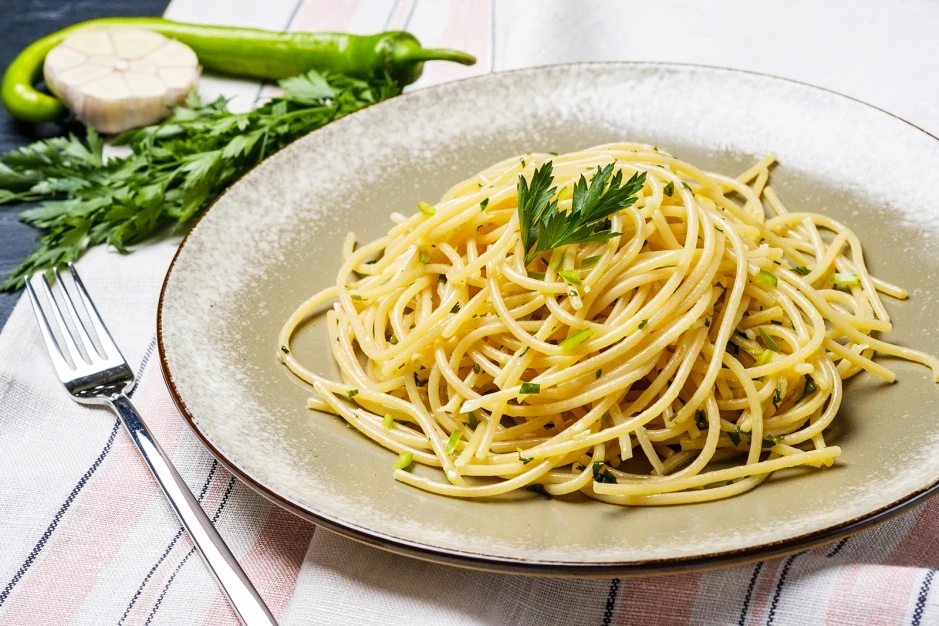

Garlic and Oil Pasta

Description
The Garlic and Oil Pasta is probably one of the best recipes that has ever been made by italians. First, because of its only three ingredients need (or 5, if you follow our suggestion). Second, because of its intense taste and flavour.
Follow the steps bellow to create a perfect Garlic and Oil pasta for you or your family to truly enjoy it.
Ingredients
- 500g of spaghetti (the good stuff. Don't be cheap here)
- 1 bulb of garlic (big, beautiful, aromatic)
- 6 tbsp of good quality extra-virgin olive oil
- 1 sicilian lemon (Optional, but recommended)
- 1 tbsp of butter (Optional)
- 1 red pepper, without the seeds (Optional)
Steps
- Get a large pan, fill it with water and put it to boil
- In the mean time, cut the cloves of galic into very thin slices
- Cut the lime in half and squeeze it into a separated cup. Don't let the seeds fall or remain in the cup.
- Also remove the pepper's seeds and cut the pepper into slices
- If the water is already boiling, add about 1-2 tbsp of salt on in (until it tastes like the ocean) and put in the pasta. You will cook the pasta for one minute less than written in the box.
- While the pasta cooks, get another large pan and in there add the olive oil, turn on the fire on low heat and add the garlic asap. After about 30 seconds, add the pepper. The galic must heat up along with the oil, so the oil will embrace the galic's flavour
- Don't let the garlic become brown. Once it is starting to do so, add the lemon and the butter, and when the butter melts, turn off the heat and wait for the pasta to finish the cooking.
- Once there is only one minute left for the pasta to be ready, grab it and put it in the pan with the other ingredients. Use a pasta grabber to do that, and make sure to let some of the pasta water to go with it.
- Grab about 3/4 cup of the remained pasta water and add it into the pan with the ingredients and the pasta, this will make the pasta continue to cook. You can put the heat to medium-height now
- Once the water has fully evaporated, turn of the head. You can also add a little bit of parsley or parmesan cheese right before you turn off the heat, but for me, it is not needed.
- The pasta is ready! Taste the salt and add a little bit more if you want to.